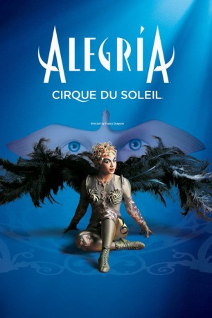

#6746 Cirque du Soleil - Alegría
 
 IMDB-Wertung: 8.6 / 10
IMDB-Wertung: 8.6 / 10  Metascore: 0
Metascore: 0 
Alegría ist eine Stimmung, ein Geisteszustand. Die Themen der Show, deren Name auf Spanisch „Jubel“ bedeutet, sind vielfältig. Macht und der Wechsel von Machtverhältnissen im Lauf der Zeit, die Evolution von antiken Monarchien zu modernen Demokratien, Alter, Jugend – vor diesem Hintergrund führen die Charaktere von Alegría ihr Leben. Das Universum der Show besteht aus Narren, Minnesängern, Bettlern, alten Aristokraten und Kindern sowie Clowns, denen es als Einzigen möglich ist, dem Verstreichen der Zeit und den damit verbundenen gesellschaftlichen Wandlungen zu widerstehen.
Jahr: 2001
Dauer: 90 Minuten
FSK:
Land: Kanada Studio: Columbia TriStar Home EntertainmentTonspuren:
Untertitel:
Auflösung: SD (640x368) Größe: 701 MB
Genre: Musik, Familie, Musical
Regisseur: Nick Morris
Drehbuch: Cirque du Soleil Images
Soundtrack:
Darsteller:
- Ebon Grayman als Monsieur Fleur
- Tamir Erdenesaikan als Tamir / Russian Bars
- Batmuhkh Batjargal als Little Tamir / Russian Bars
- Piotr Matula als The Old Nostalgic Bird / Fast Track
- Kristina Ivanova als Nymph / Fast Track / Russian Bars
- Cindy Whiteman als Nymph / Fast Track / Russian Bars
- Time Sumeo als Angel / Bird
- Adir Ionov als Angel
- Francesca Gagnon als The White Singer
- Eve Montpetit als The Black Singer
- Nikolai Terentiev als Clown
- Vladimir Olshansky als Clown
- Yuri Medvedev als Clown / Snow Storm
- Anna Shelper als Synchronized Trapeze
- Gaston Eliê als Synchronized Trapeze
- Elvira Becks als Fast Track
- Efgueni Ivanov als Fast Track
- Giya Khetaguri als Fast Track
- Lindsay Orton als FastTrack
- Evguenia Rochtchina als Fast Track
- Danielle Rodenkirchen als Fast Track
- Eric Saintonge als Fast Track
- Franck Salcines als Fast Track
- Ivan Savelyev als Fast Track / Russian Bars
- Justin Sullivan als Fast Track
- Mikhail Vorontsov als Fast Track
- Karl Sanft als Fire Knife Dancer
- Elena Lev als Hoops
- Ginaud Dupuis als The Strong Man
- Alexandre Dobrynine als The Flying Man
- Vadim Foutsov als Russian Bars Porter
- Igor Issakov als Russian Bars Porter
- Oleg Plotnikov als Russian Bars Porter
- Serguei Samoded als Russian Bars Porter
- Aleksei Tvelenev als Russian Bars Porter
- Sergey Voskovykh als Russian Bars Porter
- Victor Bryndine als Flyer
- Alexi Kondratev als Flyer
- Yury Samsonov als Flyer
- Ulziibayar Chimed als Contortionist
- Vitaly Hudzenko als Aerial High Bar Porter
- Valery Tchoukhlov als Aerial High Bar Porter
- Alexey Novozhilov als Aerial High Bar Porter
- Oleksandr Bogulya als Flyer
- Yevgen Kuz'min als Flyer
- Oleksandr Pylypenko als Flyer
- Guennadi Rybine als Flyer
- Mikhail Petrov als Flyer
- Leslie Angeles als Fast Track , unconfirmed
- Kris Burley als Fast Track , unconfirmed
Datei: X:\Dokumentationen\Cirque du Soleil\Cirque du Soleil - Alegría (2001, FSK, 640x368).avi seit 11.08.2017
Festplatte: HD Serien(SU-Z)+Dokus+Musik
 Es gibt insgesamt 17 Filme in der Gruppe 'Dokumentationen\Cirque du Soleil'
Es gibt insgesamt 17 Filme in der Gruppe 'Dokumentationen\Cirque du Soleil'